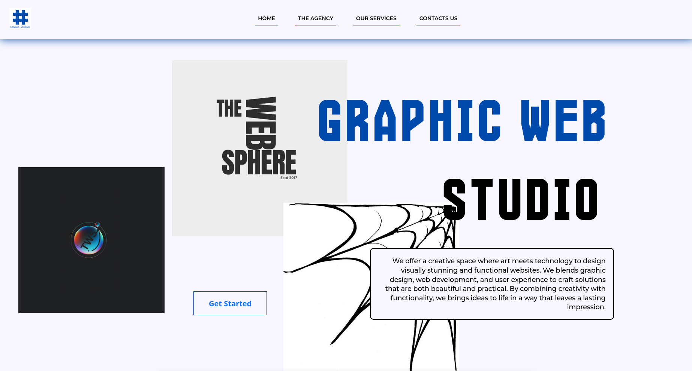
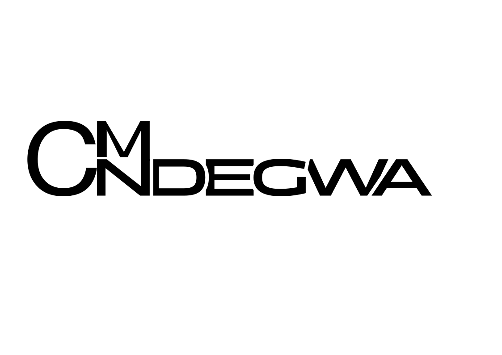
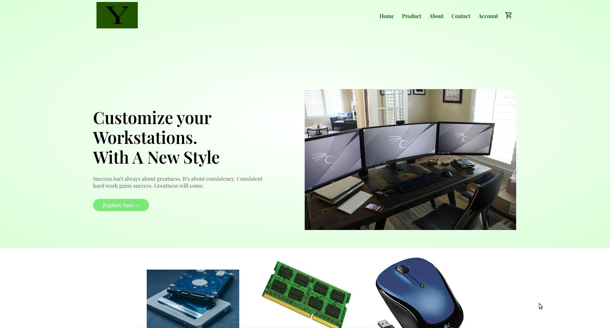
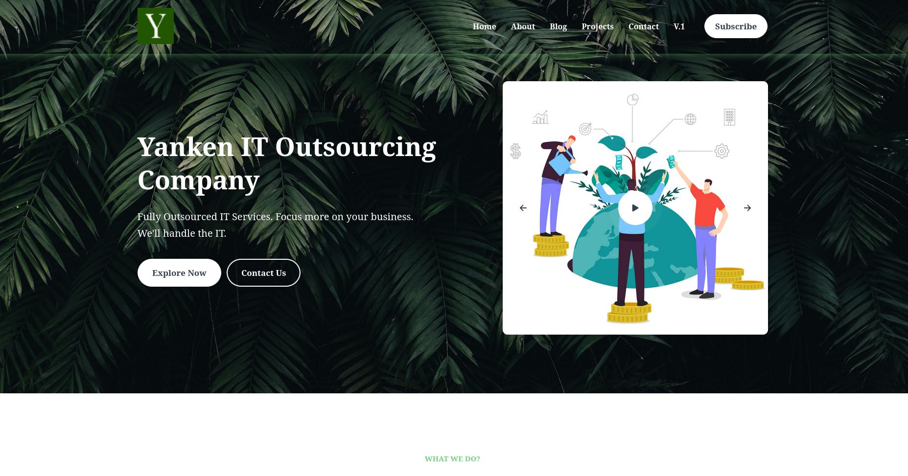

Brand & visual design
The Web Sphere
A bold creative-studio website bringing identity, web design, and visual storytelling together.

Software · Data · Design
I'm Clinton, a software and data engineer building useful web products, data systems and visual identities.
Explore selected workI start with understanding the Problem.
01 / 03A few things I've made

A bold creative-studio website bringing identity, web design, and visual storytelling together.
A database-backed stock workflow that tracks movement and helps prevent invalid inventory changes.

A product-led storefront designed around clear browsing and a straightforward shopping journey.

A service website that makes the offer clear and gives prospective clients a direct path to get in touch.
A Django REST and Vue storefront with product discovery, customer accounts, cart, checkout, and order tracking.
A Linux privacy toolkit that brings everyday cleanup, permission hardening, and system settings into one workflow.
A workbook analysis tool that maps varied spreadsheet layouts, validates records, and turns key metrics into a dashboard.
Identity, marks & visual experiments
What I can help with
Practical skills for ideas that need to move from concept to something people can use.
Visual identities, campaign creative, and digital design with a clear point of view.
↗Structured data workflows, reliable databases, and reporting that brings useful information into focus.
↗Web applications and business tools built around real needs and straightforward experiences.
↗A little about me
I'm Clinton Ndegwa, a software and data engineer who enjoys turning complex challenges into clear, dependable solutions. I work across software, data, and visual design, staying focused on what helps people get things done.
Have something in mind?